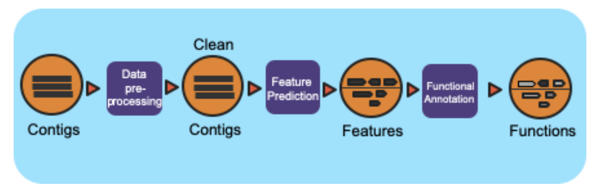

Metagenome Annotation Workflow¶
Summary¶
This workflow is based on the JGI/IMG metagenome annotation pipeline. It takes assembled metagenomes and generates structrual and functional annotations. The workflow splits the input assembly into 10MB shards and proccesses those in parallel. The workflow uses a number of open-source tools and databases to generate the structural and functional annotations.
Workflow Diagram¶
Workflow Dependencies¶
Third party software¶
Conda (3-clause BSD)
tRNAscan-SE >= 2.0 (GNU GPL v3)
Infernal 1.1.2 (BSD)
CRT-CLI 1.8 (Public domain software, last official version is 1.2)
Prodigal 2.6.3 (GNU GPL v3)
GeneMarkS-2 >= 1.07 (Academic license for GeneMark family software)
Last >= 983 (GNU GPL v3)
HMMER 3.1b2 (3-clause BSD)
TMHMM 2.0 (Academic)
Database¶
Rfam (Creative Commons Zero (“CC0”))
SMART (Academic)
COG (Free, No license available, HMMs created from the 2003 models)
TIGRFAM (Free, No license available)
SUPERFAMILY (Academic)
Pfam (GNU Lesser General Public License)
Cath-FunFam (Free, No license available)
Workflow Availability¶
The workflow is available in GitHub: https://github.com/microbiomedata/mg_annotation/
The container is available at Docker Hub (microbiomedata/mg-annotation): https://hub.docker.com/r/microbiomedata/mg-annotation
The databases are available by request. Please contact NMDC (support@microbiomedata.org) for access.
Details¶
The annotation workflow is based on the IMG annotation workflow. The input assembly is first split into 10MB chunks. Depending on the workflow engine configuration, the in splits can be processed in parallel. Each split is first structurally annotated, then then those results are used for the functional annotation. The structural annotation uses tRNAscan_se, RFAM, CRT, Prodigal and GeneMarkS. These results are merged to create a concensus structural annotation. The resulting GFF is used in the functional annootation which uses multiple protein family databases (SMART, COG, TIGRFAM, SUPERFAMILY, Pfam and Cath-FunFam) along with custom HMM models to generate the functional annotations. These predictions are done using Last and HMM. These annotations are merged into a consensus GFF file. Finally, the split annotations are merged together to generate a single structural anotation file and single functional annotation file. In addition, several summary files are generated in TSV format.
Inputs¶
Fasta Assembly (generated using the metagenome assembly workflow)
Outputs¶
GFF: Structural annotation
GFF: Functional annotation
TSV: KO Summary
TSV: EC Summary
TSV: Gene Phylogeny Summar
Requirements for Execution¶
Docker or other Container Runtime
Cromwell or other WDL-capable Workflow Execution Tool
Running Workflow in Cromwell on Cori¶
TBD
Version History¶
1.0.0
Point of contact¶
Package maintainer: Shane Canon <scanon@lbl.gov>